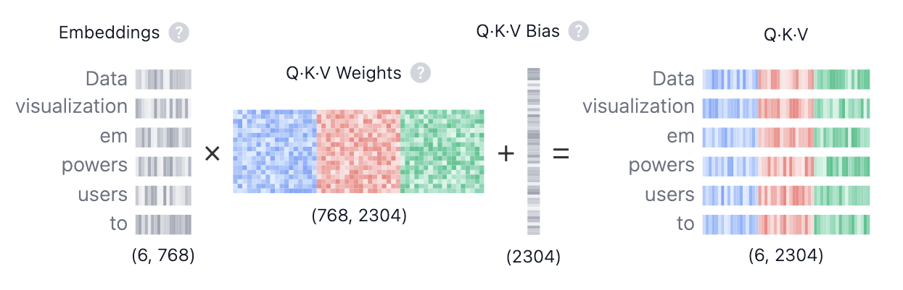
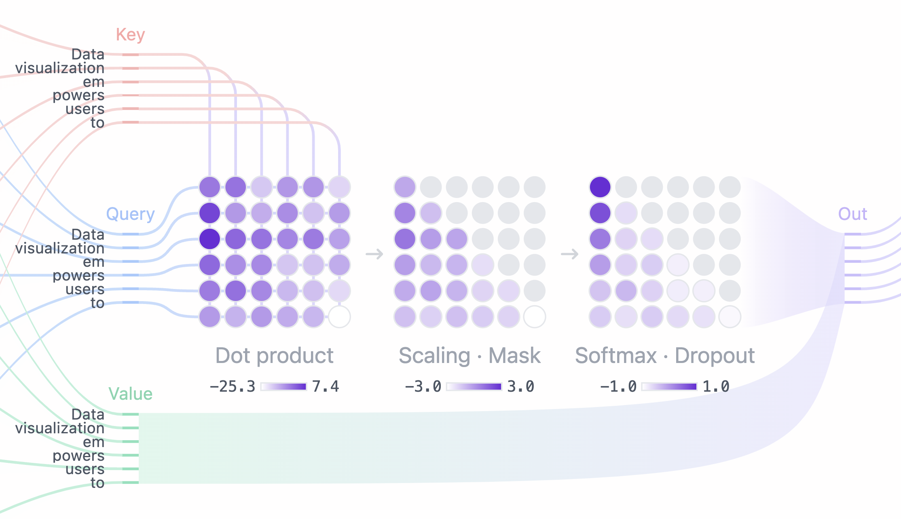
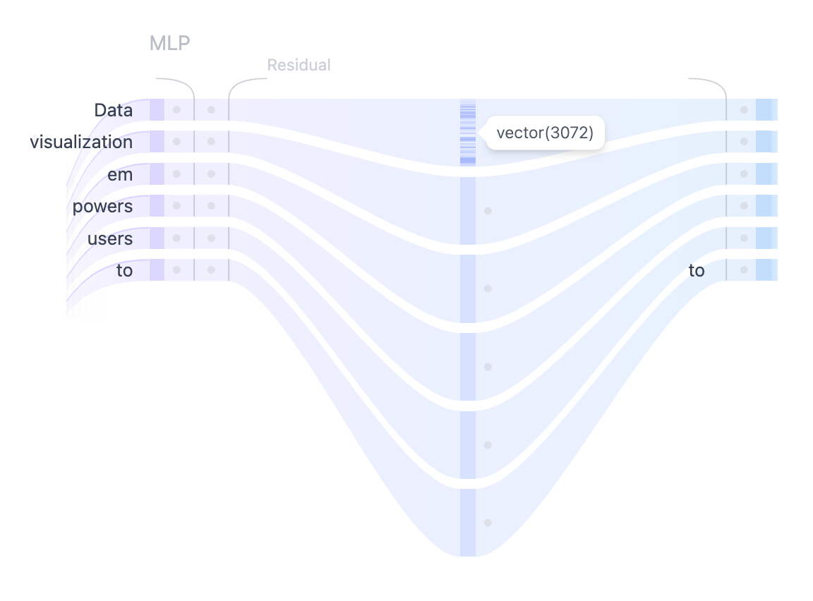

什么是 Transformer?
Transformer 是一种从根本上改变了人工智能研究范式的神经网络架构。它由开创性论文 《Attention is All You Need》 于 2017 年首次提出,此后成为深度学习模型的主流架构,支撑着 OpenAI 的 GPT、Meta 的 Llama 与 Google 的 Gemini 等文本生成模型。在文本之外,Transformer 还被广泛应用于 音频生成、 图像识别、 蛋白质结构预测,乃至 博弈决策等领域,充分展现了其跨领域的通用性。
从根本上说,文本生成式 Transformer 模型遵循下一词元预测的工作原理:给定用户输入的文本提示(prompt),模型需要回答——在这段输入之后,最可能出现的下一个词元(一个词或词的一部分)是什么?Transformer 的核心创新与强大之处在于其自注意力机制,使模型能够处理整个序列,并比以往的架构更有效地捕捉长程依赖关系。
GPT-2 系列模型是文本生成式 Transformer 的典型代表。Transformer Explainer 基于 GPT-2 (小号版本)模型运行,该模型拥有 1.24 亿个参数。它虽然不是最新、最强大的 Transformer 模型,但其架构组件和原理与当前最先进的模型一脉相承,因而是理解 Transformer 基础知识的理想起点。
Transformer 架构
每一个文本生成式 Transformer 都包含以下三个关键组件:
- 嵌入(Embedding):将文本输入划分为称为词元(token)的较小单元,可以是完整的词,也可以是子词。这些词元随后被转换为数值向量,即嵌入向量,用于刻画词的语义信息。
- Transformer 模块是模型的基础构件,负责处理和变换输入数据。每个模块包含:
- 注意力机制,Transformer 模块的核心组件。它使不同词元之间能够相互"交流",捕捉上下文信息以及词与词之间的关系。
- MLP(多层感知机)层,一个对每个词元独立运算的前馈网络。注意力层的作用是在词元之间传递信息,而 MLP 的作用则是精炼每个词元自身的表示。
- 输出概率:最后的线性层与 softmax 层将处理后的嵌入转换为概率分布,使模型能够对序列中的下一个词元作出预测。
嵌入(Embedding)
假设您想使用 Transformer 模型生成文本,并输入了这样的提示:“Data visualization empowers users to”。这段输入需要先被转换为模型能够理解和处理的格式,这正是嵌入发挥作用的地方:它将文本变换为模型可以运算的数值表示。要将一段提示转换为嵌入,我们需要依次完成:1)对输入进行词元化;2)获取词元嵌入;3)加入位置信息;最后 4)将词元嵌入与位置编码相加,得到最终嵌入。下面我们逐步考察其中的每一个环节。

第 1 步:词元化(Tokenization)
词元化是将输入文本切分为更小、更易于处理的单元(即词元)的过程。这些词元可以是一个完整的词,也可以是子词。"Data" 和 "visualization" 各自对应一个独立的词元,而单词 "empowers" 则被切分为两个词元。完整的词元词表在训练模型之前就已确定:GPT-2 的词表包含 50,257 个不同的词元。将输入文本切分为带有唯一 ID 的词元之后,我们就可以通过嵌入获取它们的向量表示。
第 2 步:词元嵌入(Token Embedding)
GPT-2(小号版本)将词表中的每个词元表示为一个 768 维向量;向量的维度取决于具体的模型。这些嵌入向量存储在一个形状为 (50,257, 768) 的矩阵中,包含约 3900 万个参数!借助这一规模庞大的矩阵,模型能够为每个词元赋予语义——在训练中,用法或语义相近的词元在高维空间中彼此靠近,而语义无关的词元则相距较远。
第 3 步:位置编码(Positional Encoding)
嵌入层还会对每个词元在输入提示中的位置信息进行编码。不同模型采用的位置编码方法各不相同。GPT-2 从零开始训练自己的位置编码矩阵,并将其直接整合进训练过程之中。
第 4 步:最终嵌入(Final Embedding)
最后,我们将词元嵌入与位置编码相加,得到最终的嵌入表示。这一融合表示既刻画了词元的语义信息,也保留了其在输入序列中的位置信息。
Transformer 模块
Transformer 处理流程的核心在于 Transformer 模块,它由多头自注意力与多层感知机(MLP)层构成。大多数模型由多个这样的模块按顺序堆叠而成。词元的表示从第一个模块到最后一个模块逐层演化,使模型能够对每个词元建立越来越深入的理解。这种分层设计使模型能够构建对输入的高阶抽象表示。我们所考察的
GPT-2(小号版本)模型由 12 个这样的模块组成。
多头自注意力(Multi-Head Self-Attention)
自注意力机制使模型能够捕捉序列中词元之间的关系,使每个词元的表示都受到其他词元的影响。多个注意力头让模型可以从不同角度考察这些关系;例如,某个头可能关注短距离的句法关联,而另一个头则追踪更宏观的语义语境。下面我们将逐步剖析多头自注意力的计算过程。
第 1 步:查询、键、值矩阵

每个词元的嵌入向量会被变换为三个向量: 查询(Query,Q)、 键(Key,K)与 值(Value,V)。这三个向量是通过将输入嵌入矩阵与学习得到的 Q、K、V 权重矩阵相乘而得到的。为了帮助建立对这些矩阵的直观理解,可以借助"网络搜索"这个类比:
- 查询(Query,Q) 相当于您在搜索引擎输入框中键入的检索文本,代表当前想要"进一步了解信息"的那个词元。
- 键(Key,K) 相当于搜索结果中每个网页的标题,代表查询可能关注到的候选词元。
- 值(Value,V) 相当于网页呈现的实际内容。当检索词(Query)与相关结果(Key)匹配之后,我们希望获取的正是最相关页面的内容(Value)。
借助这些 QKV 数值,模型可以计算注意力分数,从而决定在生成预测时每个词元所应获得的关注程度。
第 2 步:多头切分
查询、键与 值 向量会被切分到多个注意力头中——GPT-2(小号版本)切分为 12 个头。每个头独立处理嵌入向量中的一段子向量,捕捉不同的句法与语义关系。这种设计使模型能够并行学习多样化的语言特征,增强其表示能力。
第 3 步:带掩码的自注意力
在每个注意力头中,我们执行带掩码的自注意力计算。该机制让模型在聚焦输入相关部分的同时,无法访问未来的词元,从而支持序列的自回归生成。

- 点积:查询与 键 矩阵的点积决定注意力分数,得到一个方阵,反映所有输入词元之间的关系。
- 缩放 · 掩码:对注意力分数进行缩放,并在注意力矩阵的上三角施加掩码,以阻止模型访问未来的词元——这些位置被设为负无穷。模型必须学会在不"偷看"未来的前提下预测下一个词元。
- Softmax · Dropout:掩码与缩放之后,注意力分数经 softmax 运算转换为概率,并可选择性使用 dropout 进行正则化。矩阵每行之和为 1,表示其左侧每个词元对当前词元的相关程度。
第 4 步:输出与拼接
模型将带掩码的自注意力分数与 值(Value)矩阵相乘,得到自注意力机制的 最终输出。GPT-2 拥有 12 个自注意力头,各自捕捉词元之间不同的关系。这些头的输出先被拼接,再经过一个线性投影。
MLP:多层感知机(Multi-Layer Perceptron)

当多头自注意力捕捉了输入词元之间的多种关系之后,其拼接后的输出会经过多层感知机(MLP)层,以进一步增强模型的表示能力。MLP 模块由两个线性变换构成,中间夹着一个 GELU 激活函数。
第一个线性变换将输入的维度从 768 扩展到四倍的 3072。这一升维步骤使模型能够将词元表示投影到更高维的空间中,在其中捕捉原维度下不可见的、更丰富也更复杂的模式。
第二个线性变换随后将维度压缩回原始大小 768。这一降维步骤在保留升维阶段引入的有用非线性变换的同时,将表示恢复到便于处理的规模。
与在词元之间融合信息的自注意力机制不同,MLP 对各词元独立处理,只是把每个词元的表示从一个空间映射到另一个空间,并由此提升模型的整体容量。
输出概率
输入经过所有 Transformer 模块处理后,输出会被送入最后的线性层,为词元预测做好准备。该层将最终表示投影到 50,257 维的空间中,词表中的每个词元都对应其中一个数值,称为 logit。由于任何词元都可能成为下一个词,这一过程实际上让我们可以按“作为下一个词的可能性”对这些词元进行排序。随后我们应用
softmax 函数,将 logits 转换为总和为 1 的概率分布,从而可以依据可能性对下一个词元进行采样。

最后一步是从该分布中采样生成下一个词元。在这一过程中,温度(temperature) 超参数起着关键作用。从数学上看,这是一个非常简单的操作:将模型输出的 logits 直接除以 温度:
temperature = 1:logits 除以 1 不会改变 softmax 的输出。temperature < 1:较低的温度会锐化概率分布,使模型更加自信、更具确定性,产生更可预测的输出。temperature > 1:较高的温度会软化概率分布,为生成文本引入更多随机性——也就是一些人所称的模型“创造性”。
此外,采样过程还可以借助 top-k 与 top-p 参数作进一步控制:
top-k 采样:将候选词元限制为概率最高的前 k 个,过滤掉可能性较低的选项。top-p 采样:考虑累计概率超过阈值 p 的最小词元集合,在保证只保留高概率词元的同时兼顾多样性。
通过调节 温度、top-k 与 top-p,您可以在确定性与多样性之间取得平衡,按需定制模型的行为。
辅助架构特性
除了核心组件之外,Transformer 模型还包含若干提升性能的辅助架构特性。它们对模型的整体性能十分重要,但对理解架构核心概念而言并非关键。层归一化、Dropout 与残差连接是 Transformer 模型中的关键组件,在训练阶段尤为如此:层归一化能够稳定训练过程、加快模型收敛;Dropout 通过随机失活神经元来防止过拟合;残差连接则让梯度得以直接流经网络,有效缓解梯度消失问题。
层归一化(Layer Normalization)
层归一化有助于稳定训练过程并改善收敛。其做法是对各特征维度上的输入进行归一化,保证激活值的均值和方差保持一致。这种归一化能够缓解内部协变量偏移相关问题,使模型更有效地学习,并降低对初始权重的敏感度。层归一化在每个 Transformer 模块中使用两次:一次在自注意力机制之前,一次在 MLP 层之前。
Dropout(随机失活)
Dropout 是一种用于防止神经网络过拟合的正则化技术:在训练时随机将一部分模型权重置零。这促使模型学习更鲁棒的特征,降低对特定神经元的依赖,帮助网络更好地泛化到未见过的数据。在模型推理阶段,Dropout 处于关闭状态。这实质上相当于使用训练得到的多个子网络的集成,从而带来更好的模型性能。
残差连接(Residual Connection)
残差连接最早在 2015 年的 ResNet 模型中提出。这一架构创新使极深神经网络的训练成为可能,深刻影响了深度学习的发展。本质上,残差连接是绕过一层或多层的"捷径",将一层的输入直接加到该层的输出上。这有助于缓解梯度消失问题,使彼此堆叠的多个 Transformer 模块组成的深层网络更易训练。在 GPT-2 中,每个 Transformer 模块内部使用两次残差连接:分别位于 MLP 之前与之后,确保梯度更顺畅地流动,让靠近输入的各层在反向传播中获得充分的更新。
交互功能
Transformer Explainer 以交互式探索为设计目标,让您可以亲手体验 Transformer 的内部工作机制。以下是您可以尝试的部分交互功能:
- 输入您自己的文本序列,观察模型如何处理文本并预测下一个词。您可以探索注意力权重、中间计算过程,并查看最终输出概率是如何得出的。
- 使用温度(Temperature)滑块,控制模型预测的随机性。通过改变温度取值,体验模型输出如何在严谨确定与丰富创造之间变化。
- 选择 top-k 与 top-p 采样方法,调节推理阶段的采样行为。尝试不同的取值,观察概率分布如何变化并影响模型的预测。
- 与注意力矩阵交互,查看模型如何关注输入序列中的不同词元。将鼠标悬停在词元上可高亮其注意力权重,探索模型如何捕捉上下文与词间关系。
视频教程
Transformer Explainer 的技术实现
Transformer Explainer 内置了一个直接在浏览器中实时运行的 GPT-2(小号版本)模型。该模型源自 Andrej Karpathy 的 nanoGPT 项目中 GPT 的 PyTorch 实现,并被转换为 ONNX Runtime 格式,从而可以在浏览器中流畅运行。界面基于 JavaScript 构建,使用 Svelte 作为前端框架,并借助 D3.js 创建动态可视化。页面中的数值会随用户输入实时更新。
Transformer Explainer 的开发团队
Transformer Explainer 由以下人员创建: Aeree Cho, Grace C. Kim, Alexander Karpekov, Alec Helbling, Jay Wang, Seongmin Lee, Benjamin Hoover 与 Polo Chau ,来自佐治亚理工学院(Georgia Institute of Technology)。
汉化说明:本站汉化自上述佐治亚理工学院的开源项目 Transformer Explainer——界面、交互式教程与教学文章均已译为标准中文学术表达,供《神经网络与深度学习》课程教学使用。